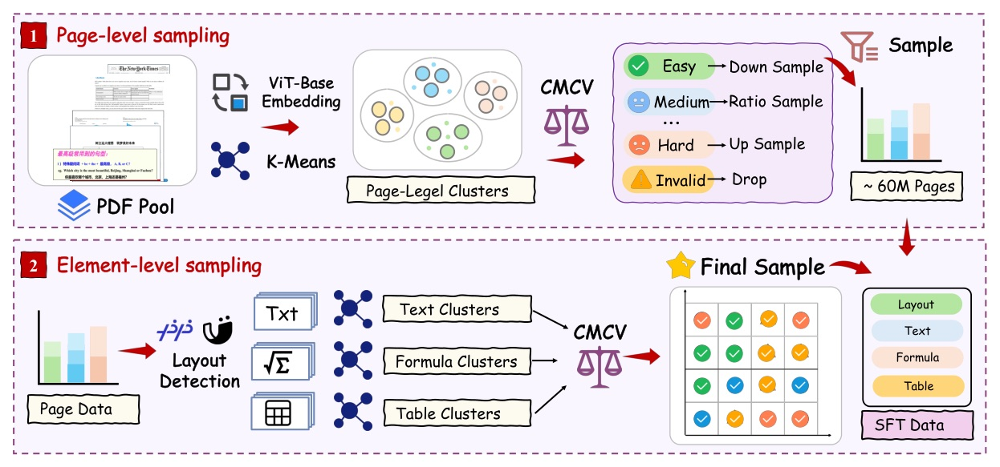
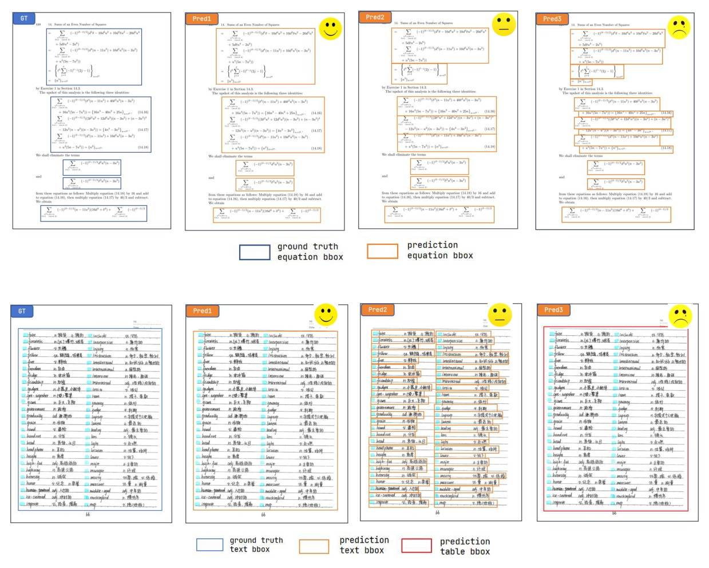

資料工程能不能在不改模型架構的前提下，繼續把 document parsing 往上推？
固定同一個 1.2B backbone，靠資料覆蓋、跨模型驗證與標註修正，Full score 從 92.98 到 95.69。
Coverage
Annotation quality

| Tier | Cross-model pattern | Data action |
|---|---|---|
| Easy | Target 與至少一個外部模型一致 | consensus annotation 可直接使用 |
| Medium | 兩個外部模型一致；target 顯著不同 | 高價值 capability gap；外部 consensus 當 pseudo-label |
| Hard | 三個模型 pairwise 都顯著不一致 | 不直接信任；送 Judge-and-Refine / expert |
模型池：MinerU2.5、PaddleOCR-VL、Qwen3-VL-30B；task metrics：text edit distance、table TEDS、formula CDM。
Medium 不只是「有點難」；它是目標模型缺、別人已會、而且標籤可取得的樣本。
Naive self-reflection 的盲點
Render-then-verify 的改變
「讓模型改答案」不是關鍵。
先補上它缺少的 output → visual 檢查路徑，才讓 correction 變得可靠。
| Stage | Data | Purpose | Key config |
|---|---|---|---|
| 1 · pre-training | 65.5M Easy / Medium | broad capability | batch 256 · 1 epoch |
| 2 · hard SFT | 192K expert Hard + replay | repair hard scenarios | batch 128 · 1 epoch |
| 3 · GRPO | high-quality Hard rollouts | align task metrics | G=16 · batch 512 |
Architecture remains NaViT-675M vision encoder + Qwen2-0.5B language model; no structural modification.
Data composition
Sampling principle

| Split | Pages | Role |
|---|---|---|
| Base | 1,355 | 保留 v1.5，維持歷史可比性 |
| Hard | 296 | 複雜 nested tables、dense formulas、unconventional layouts |
| Full | 1,651 | Base + Hard 的完整衡量 |
Hard subset 從 difficulty-stratified pool 選取，排除於本模型每一訓練 stage，且由專業團隊 cross-validation。
| Method | Params | Overall | Formula CDM | Table TEDS |
|---|---|---|---|---|
| MinerU2.5-Pro | 1.2B | 95.69 | 97.29 | 93.42 |
| GLM-OCR | 0.9B | 95.15 | 96.99 | 92.83 |
| PaddleOCR-VL-1.5 | 0.9B | 94.87 | 96.69 | 91.67 |
| MinerU2.5 baseline | 1.2B | 92.98 | 95.59 | 87.88 |
| Gemini 3 Pro | — | 92.85 | 95.83 | 89.15 |
Hard: MinerU2.5-Pro / GLM-OCR / PaddleOCR-VL-1.5
| Training state | Full | Delta | Interpretation |
|---|---|---|---|
| MinerU2.5 baseline | 92.98 | — | same architecture |
| + Stage 1 large-scale SFT | 94.29 | +1.31 | largest single-stage gain |
| + Stage 2 hard SFT | 95.25 | +0.96 | table TEDS: 90.37 → 92.87 |
| + Stage 3 GRPO | 95.69 | +0.45 | formula CDM: 96.48 → 97.29 |
最大的單段增益是 Stage 1 的 +1.31。
這份 ablation 支持的不是泛泛的「data is all you need」，而是有篩選、有置信分層、有品質控管的資料系統。
| Metric | Pro | Baseline | Change |
|---|---|---|---|
| Text Full edit distance ↓ | 0.019 | 0.028 | 30.5% reduction |
| Table Overall TEDS ↑ | 91.10 | 87.94 | +3.16 |
| Table Hard TEDS ↑ | 92.46 | 88.28 | +4.18 |
“the current performance bottleneck in document parsing stems primarily from shared deficiencies in training data, not from model architecture itself.”
跨架構的系統性失敗，讓作者將主要瓶頸指向共享訓練資料缺陷，而不是模型架構。§1 p.4
“the error-amplification effect of rendering translates subtle, text-domain structural flaws ... into salient visual anomalies or layout collapse.”
rendering 會把文字域中細微的結構錯，放大成明顯視覺異常或版面崩壞。§3.3 p.9
“Stage 1 ... contributes the largest single-stage gain (+1.31).”
Stage 1 的 +1.31 是最大單段增益，支持資料覆蓋與標註品質是主要 performance driver。§6.2 p.15
MinerU2.5-Pro 的可取之處，在於把 sample selection、label trust、correction budget 與 evaluation protocol 一起做成可驗證的設計。